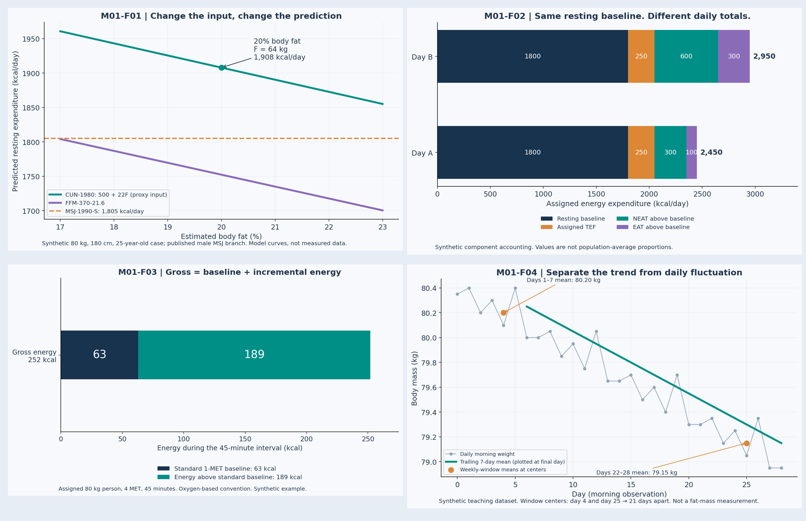

Metabolic Lab Bench
Change an input. Predict the direction. Then calculate. These tools implement the lesson equations and expose their assumptions; their outputs are predictions and approximations.
All default inputs describe a fictional teaching case. General education for adults; no personal intake recommendation is generated. No data leave this file.
01 · Resting predictions
CUN-1980 uses estimated FFM as an explicitly labeled proxy for the historical lean-mass input. Naming of 370 + 21.6F varies by source. Leaving body fat blank skips both FFM-based outputs.
02 · Activity accounting
Oxygen-based conversion: MET × 3.5 × kg / 200 × minutes. Standard-rest-net subtracts 1 standard MET; the alternative increment subtracts the supplied resting baseline for the interval. These are different baselines, not competing measurements.
Read the evidence before the number
A standard MET is not an individualized metabolic measurement. An input-sensitivity range is not a confidence interval. A prediction is not total daily expenditure. The lecture files explain each distinction and cite their sources.
Study guide · References · Module examination
